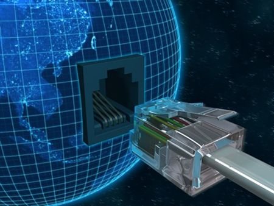

Comunicación y sincronización de procesadores
La comunicación entre procesos en un sistema multiprocesador se realiza utilizando memoria compartida. El acceso a esta memoria compartida, o a las variables que contendrá, se debe realizar de forma sincronizada. Los mecanismos de sincronización suelen implementarse mediante rutinas software que descansan en las instrucciones de sincronización proporcionadas por el hardware. Sin esta capacidad, el coste de construir las primitivas básicas de sincronización sería demasiado alto y se incrementaría al incrementarse el número de procesadores. Estas primitivas forman los bloques de construcción básicos para implementar una amplia variedad de operaciones de sincronización a nivel de usuario, incluyendo elementos tales como los cerrojos y las barreras.

Control De Programa
Los programas de control constituyen la parte del sistema operativo dedicada a coordinar el funcionamiento de todos los recursos y elementos de la computadora, es decir, el procesador, la memoria, las operaciones de entrada/salida, la información y en definitiva todo el entorno del sistema incluidos los periféricos. Los programas de control están especialmente desarrollados para que puedan ayudar con éxito a la computadora, se cual fuese la modalidad con que trabaje: monoprogramación, multiprogramación, proceso distributivo, etc., consiguiendo así la utilización óptima de los recursos disponibles. https://sistemasumma.com/2013/02/27/definicion-y-clasificacion-de-sistemas-multiprocesadores/
